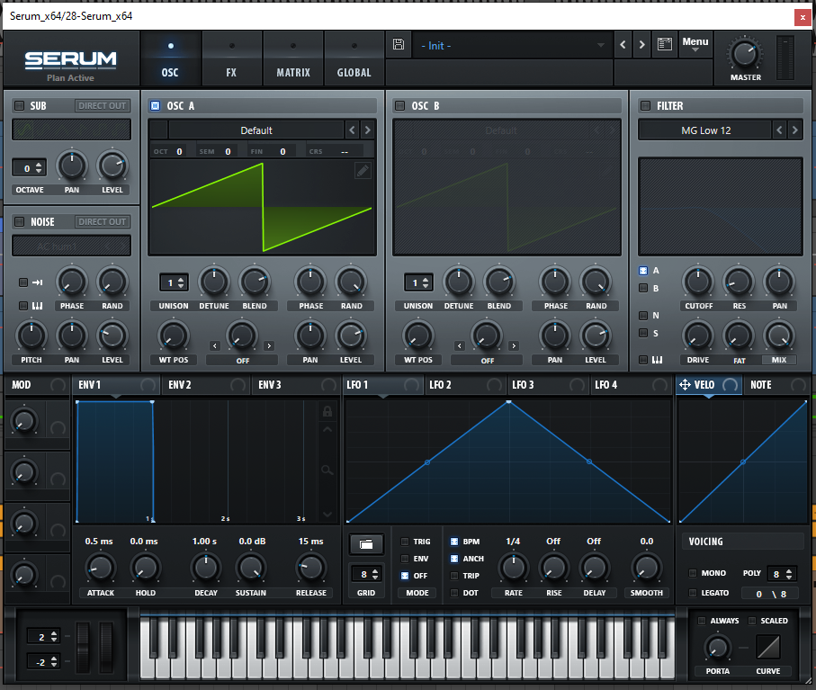
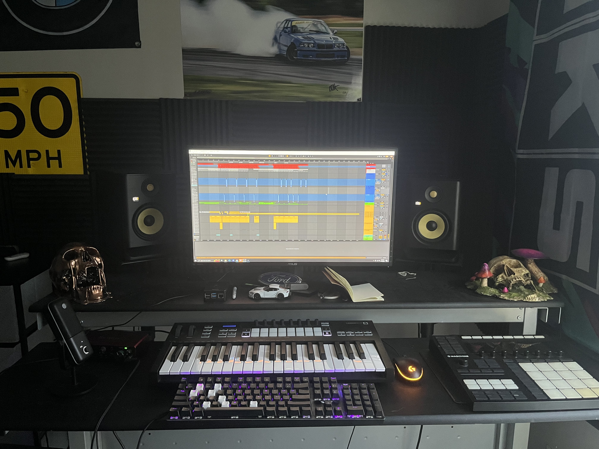

Welcome to my music production journey!
A world where creativity has no bounds. I've been on this adventure for three incredible (but painful at times) years. With Ableton Live as my trusty best friend, I've had the privilege of signing a few tracks with renowned record labels, specializing in genres like Drum & Bass and Tech House. Music production is a hobby to me, but more so a passion that never stops.

Collaborate with Me
If you're a fellow musician and want to collaborate with me, please fill out the form below:
About Me
My music production journey has gone on for nearly three years now, and it's been an amazing adventure filled with both challenges and inspiration. In the early days, I often dealt with frustration as I dealt with the limitations of my production skills. However, I soon learned that these limitations could actually fuel creativity. Keeping things simple and selecting the right sounds became the most crucial elements in crafting a great track.
I initially started on my musical voyage with house music (Tech-House which is more of a mix between techno and house), but over time, I transitioned to drum & bass. I found that this genre had fewer rules and greater creative freedom, which allowed me to develop my own unique style. On this journey, I came up with the name "Dance Virus," symbolizing my enjoyment for working with computers.
One of the highlights of being in music production was a week-long production class in New York City, hosted by one of the world's most renowned dance labels, Repopulate Mars. During this class, I had the privilege of learning from some of the industry's biggest artists, including John Summit.
Along with music production, I've also had the opportunity to play my music in clubs around the Charlotte area. The art of DJing tends to go hand in hand with music production as it's a skill that's needed in order to be able to show off your music. I purchased my first mixer at the age of 12 and have been DJing in my bedroom, clubs, and parties all over the city ever since.
Check Out Some of My Music
DAW History
Ableton Live is a fascinating piece of music software that truly changed the game. Created in 2001 by a talented team in Berlin, Germany, it set itself apart right from the beginning.

What made Live stand out was its sleek interface and innovative workflow. It introduced a dual-view system featuring Session View for arranging clips and Arrange View for traditional composition. This setup was a game-changer for dance and electronic producers, allowing them to trigger loops, play samples, and create complex arrangements with ease.
Live also introduced real-time audio timestretching, a groundbreaking feature at the time. In its early days, Live excelled as a tool for sample arrangement and DJing, with a focus on audio manipulation.
With the release of version 4, Live expanded its capabilities by introducing MIDI sequencing, enabling the use of VST plugins, MIDI note recording, and professional editing. Live even included its own built-in samplers and synthesizers. Over the years, Live continued to evolve with additional devices and the introduction of Max for Live. Whether used as a standalone DAW or in conjunction with other software, Live proved to be an incredibly versatile tool for music producers.
My Favorite Artists
One of my favorite things about music is discovering and sharing the work of other artists. Here are some of my favorites:
Tech House
Tech House will always have a special place in my heart due to its nature of making people dance:
Drum & Bass
Drum & Bass is another genre that I'm the most passionate about producing. Its not a very popular genre in the United States and can be a bit outlandish at times :
Techniques
Techniques and Organization
When it comes to music production, getting down the technical aspects takes alot time and dedication. It took me about a year of making music daily to understand the technical standpoint of production. One thing I've learned is that organization is key in ensuring all elements are properly balanced. I typically start with the low end, aka the kick and bass, making sure they are communicating properly. Then, for Tech House, Id typically add drums like claps and hi-hats, while Drum & Bass id add snares and hats repeating on the 16th note and 4th note simultaneously. Including a good vocal/acapella can make or break a track in my opinion.
Below, ive included YouTube video where I break down one of my songs and demonstrate how I set it up.
Sound Design
Sound design is a very important aspect of music production. In this video, I showcase how to craft a unique sound from scratch using the four base waveforms. A triangle wave, sine wave, saw wave, and square wave.
The synthesizer isn't visible in the video but, I have provided an image of the synthesizer below for reference.
Serum: Advanced Wavetable Synthesizer
Why I Make Music
Creating music is more than just a hobby; it's a part of my life that has been with me since I was about 12 years old when I bought my first mixer and drum set. Over the years, I taught myself how to play the drums, keyboard, and mastered DJing. What I enjoy the most about music is the transformation of an "idea" into a reality. The satisfaction of creating the exact sound I want to hear is very fulfilling. The end result, after many hours spent in my studio, is always worth the work. Sharing my passion for music never goes away.
Spending hours upon hours, sometimes more than 10 at a time in my studio, and then performing in front of large audiences, is an experience that remains exciting and worthwhile. The sensation of creating something unique and unheard of always justifies the dedication that I put into it.
Sound design stands out as my favorite element of production. In my opinion, It's arguably one of the most important aspects. The ability to hear a sound in my mind and then bring it to life is a process I enjoy the most. In a way, I can almost visualize a sound. My enjoyment for sound design is so big that I even have a tattoo of a sine wave, a saw wave, a square wave, and a triangle wave on my right wrist.
